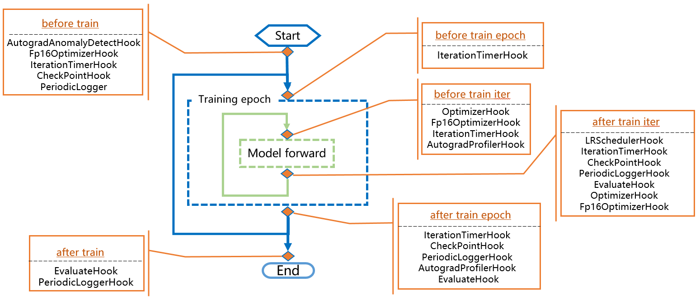
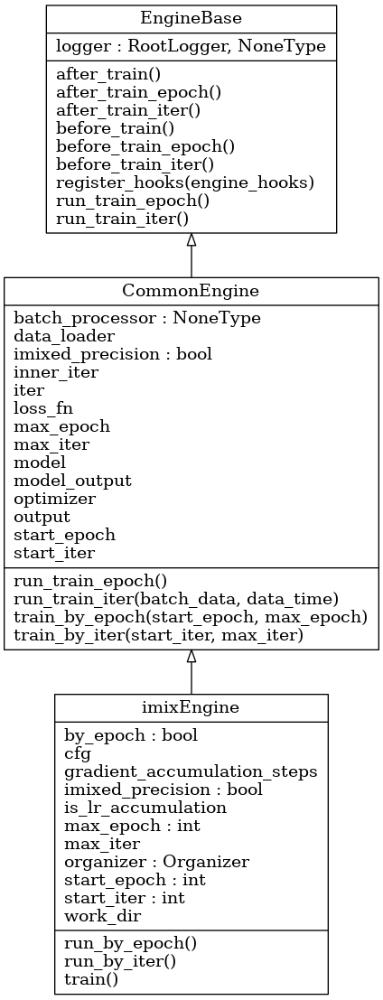
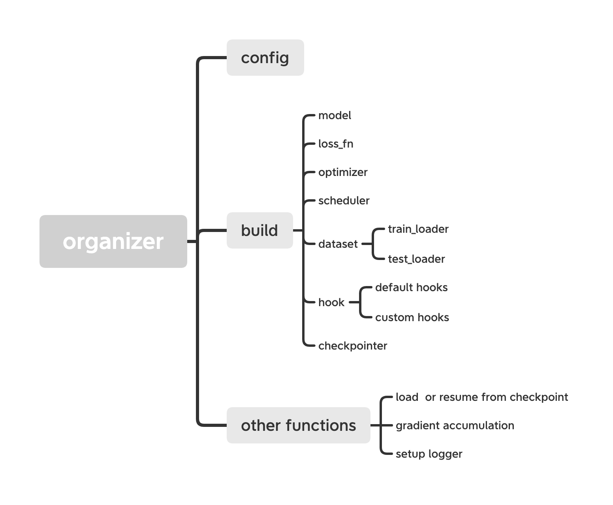

Tutorial: Engine
Engine is the core module of the MIX-Kalman framework. It organizes each part of the deep learning process, including data, models, optimizers, lr_scheduler and so on. The whole process of Engine is as follows.

Engine is mainly composed of mixkEngine and hooks. The former is used to control the whole process of deep learning training, verification and testing, in which the process is highly abstracted and modularized into several stages; the latter is in charged of specific calculation, such as autograd_anomally_detect, lr_scheduler, iteration_time,periodic_logger, evaluate and so on (For more details, please refer to the Tutorial5).
mixkEngine has two levels of inheritance, which are CommonEngine and EngineBase. The inheritance relationship of the three class is shown in the figure below.

EngineBase is parent class. It abstracts the whole process into 8 parts, including 6 parts used for running hooks (before_train, after_train, before_train_iter, after_train_iter, before_train_epoch and after_train_epoch) and 2 parts for train (run_train_epoch or run_train_iter).
CommonEngine inherits from EngineBase.
It builds 2 kinds of train modes with the 8 parts of EngineBase, which are as
run_by_epochandrun_by_iter;
| run_by_epoch | run_by_iter |
|---|---|
| before_train() | before_train() |
| before_train_epoch() | before_train_iter() |
| before_train_iter() | run_train_iter() |
| run_train_iter() | after_train_iter() |
| after_train_iter() | after_train() |
| after_train_epoch() | / |
| after_train() | / |
In the core part
run_train_iter, it computesforward train,lossand update the metrics result.
mixkEngine inherits from CommonEngine. It builds necessary modules by Organizer and choose the train mode. The details are as follows:
By Organizer, it build data_loader, model, optimizer, hooks and so on. And it gets params like start_iter, max_iter and other attributes.

In mixkEngine, it provides two training iteration methods based on epoch or iter. Users can set
by_iterparameters true or false to switch training method flexibly.